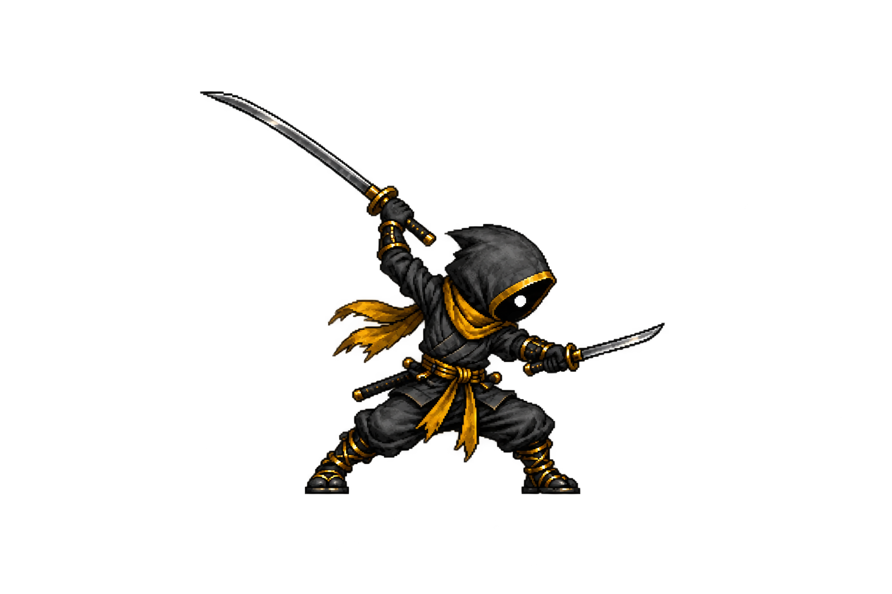
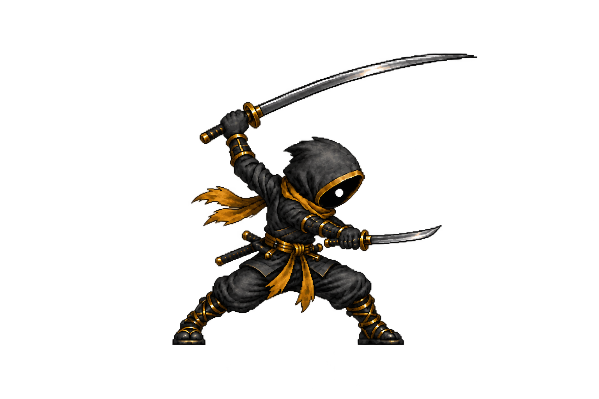
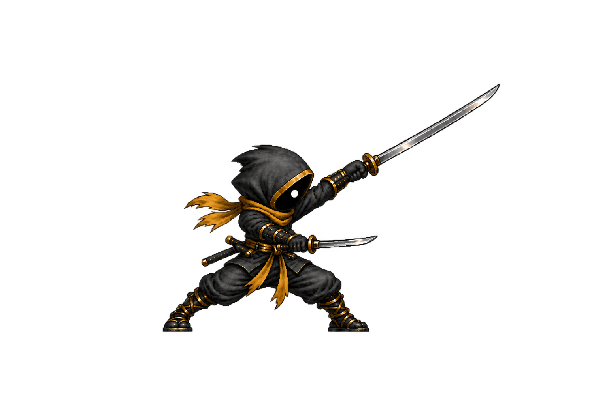
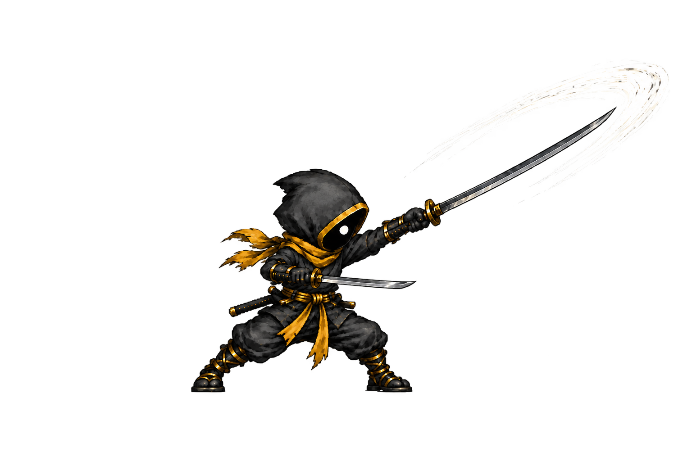
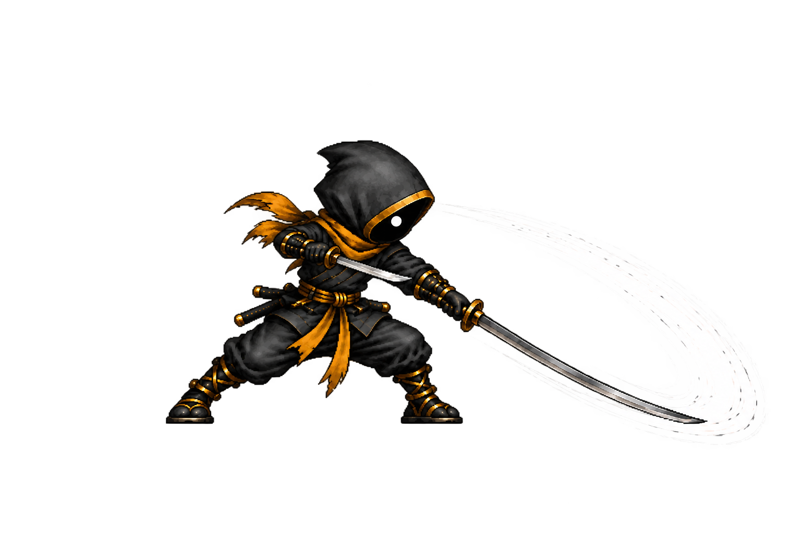
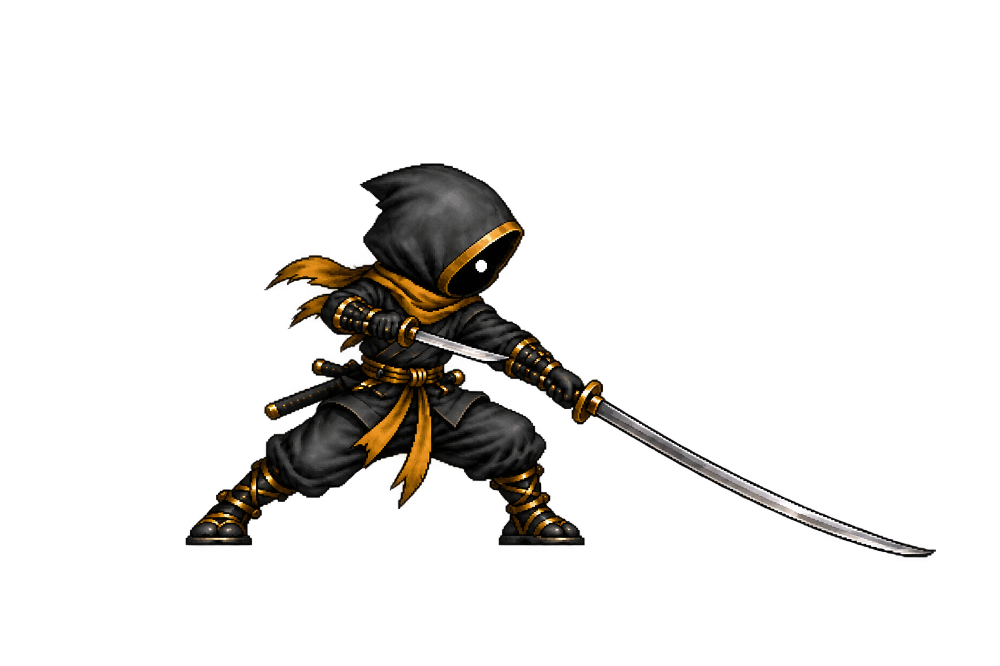
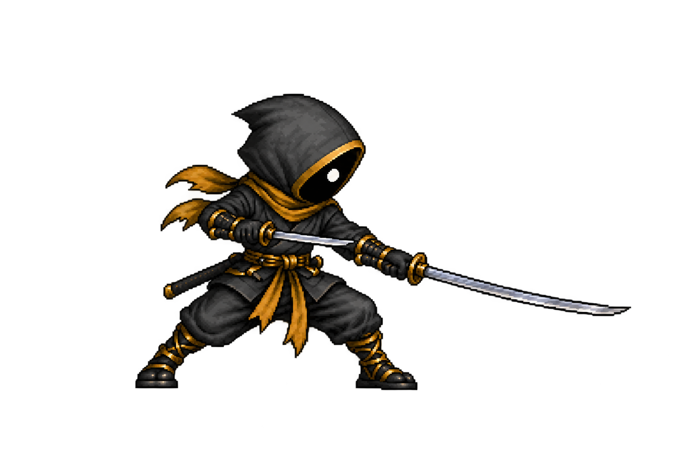
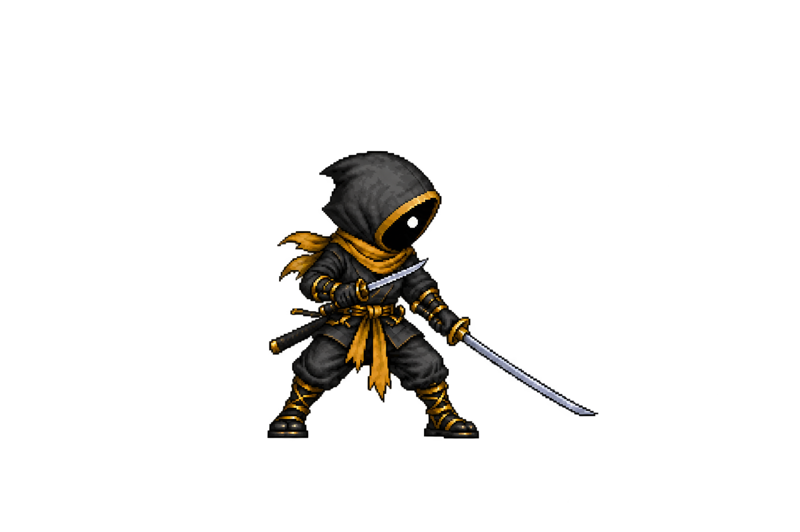

Kael · complete heavy sprite pass
Eight distinct transparent drawings are staged in Kael’s existing 300×320 cell geometry, including the three new connecting poses. Play the move at its current 330 ms visual duration. This is a production review before replacing the playable sprite cells.
Cell-size playback
1 / 8
1 · Anticipation
New eight-frame strip


1 · Anticipation · approved pose derivative

2 · Acceleration · approved pose derivative

3 · Mid cut · new connector

4 · Contact · approved pose derivative

5 · Overtravel · new connector

6 · Follow-through · approved pose derivative

7 · Recovery · approved pose derivative

8 · Settle · new connectorCurrent playable cells · model reference

Production measurements and open checks · Approved five-pose sources. The artwork in this preview has not been packed into the playable game.